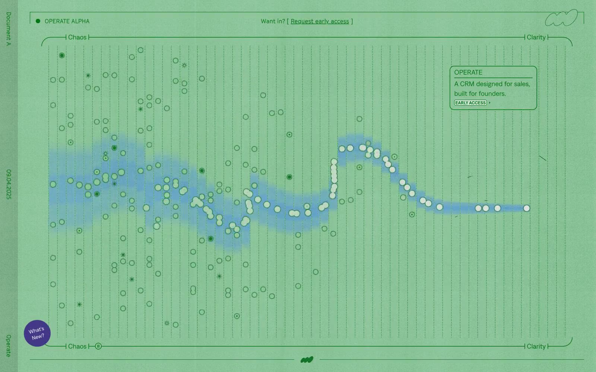

Operate 的 Design.md 主题展示，围绕SaaS 产品、运营系统、运营监控、数据仪表盘组织页面。
Explore Operate's light SaaS design system: Canvas Fog #e0e0e0, Inkwell #29211e colors, muoto, denim typography, and DESIGN.md for AI agents.

#e0e0e0: #e0e0e0#29211e: #29211e#433787: #433787#85c093: #85c093#09352e: #09352e#222222: #222222#007010: #007010#117025: #117025#ffffff: #ffffff#000000: #000000#453b41: #453b41#e5e5e5: #e5e5e5display: Interbody: Intermono: ui-monospacehints: Inter,ui-monospace